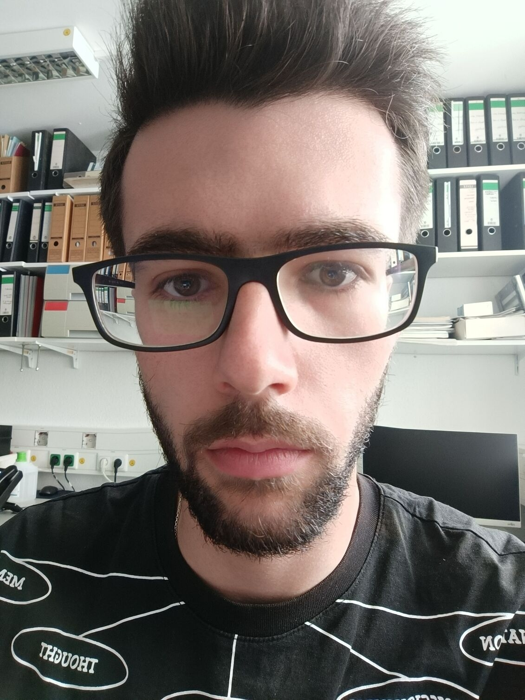

Rafail Adam
I am a biologist from the National and Kapodistrian University of Athens that primarily focuses on molecular biology. I then started my hybrid research project in Paul Ehrlich Institute in Frankfurt (which included wet and dry-lab approaches).